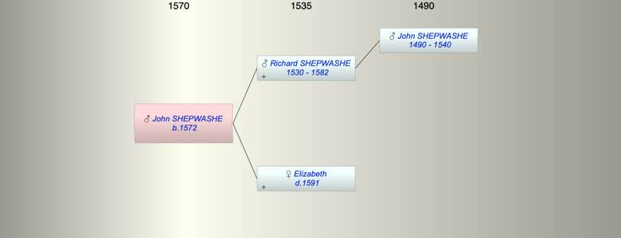

| [Index] |
| John SHEPWASHE (1572 - ) |
|  |
| b. 1572 at Chilham |
| Parents: |
| Richard SHEPWASHE (1530 - 1582) |
| Elizabeth ( - 1591) |
| Siblings (6): |
| Tamsen SHEPWASHE (1560 - 1626) |
| Richard SHEPWASHE (1562 - ) |
| Anne SHEPWASHE (1568 - ) |
| James SHEPWASHE (1575 - 1575) |
| Jane SHEPWASHE (1578 - ) |
| Thomas SHEPWASHE (1580 - 1581) |
| Events in John SHEPWASHE (1572 - )'s life | |||||
| Date | Age | Event | Place | Notes | Src |
| 1572 | John SHEPWASHE was born | Chilham | Note 1 | ||
| 1582 | 10 | Death of father Richard SHEPWASHE (aged 52) | Chilham | Note 2 | |
| 1591 | 19 | Death of mother Elizabeth | Chilham | Note 3 | |
| Note 1: bap 25 Mar 1572 son of Richard ex FMP |
| Note 2: buried 14 May 1583 ex FMP PR no further details. |
| Note 3: widow, buried 6 Feb 1591 ex FMP PR. She left a will |
| Personal Notes: |
|
John Shepwashe of Chilham 1540 will ex Canterbury
Richard Shepewashe of Chilham 1582 buried 14 May 1583 Chilham ex FMP Elizabeth Shepwash of Chilham 1590 John Shipwash of Chilham 1631 Tamsen’s brother? This looks like one family of Richard: Richard Shapwashe bap 17 Sep 1562 Chilham ex FMP Ane Shepwashe dau of Richard bap 28 Apr 1568 Chilham ex FMP John Sheepwashe bap 25 Mar 1572 son of Richard Chilham ex FMP James Shepwashe son of Richard bap 31 Jul 1575 died 4 Aug 1575 Chilham ex FMP Jane Shepwash dau of Rychard 11 May 1578 Chilham ex FMP Jane Shepwash dau of Richard bap 13 May 1578 Chilham ex FMP Thomas Shepwashe buried 23 Jan 1581 son of Richard Chilham ex FMP The father then died in 1583 his son Richard Shepwashe (b 1562) married Ann Bett 20 Jan 1589 Chilham ex FMP Thomas Shepwashe son of Richard bap 23 Jul 1592 Chilham Mary Shepwashe dau of Richard bap 23 Feb 1596 ex FMP Katherine Shepwashe dau of Richard bap 12 Mar 1598 ex FMP Jone Sheepwashe dau of Richard bap 14 Apr 1601 Chilham ex FMP Edward Shepwashe married Gilliam Maxted 9 Oct 1598 Chilham ex FMP Mary Shepwash |
| Created on a Mac™ using iFamily for Mac™ on 8 Oct 2023 |